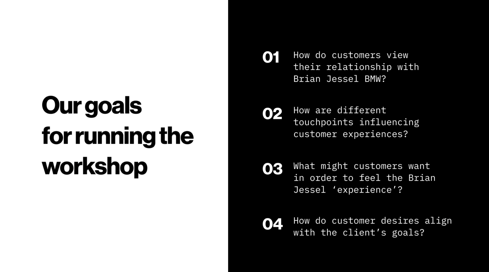
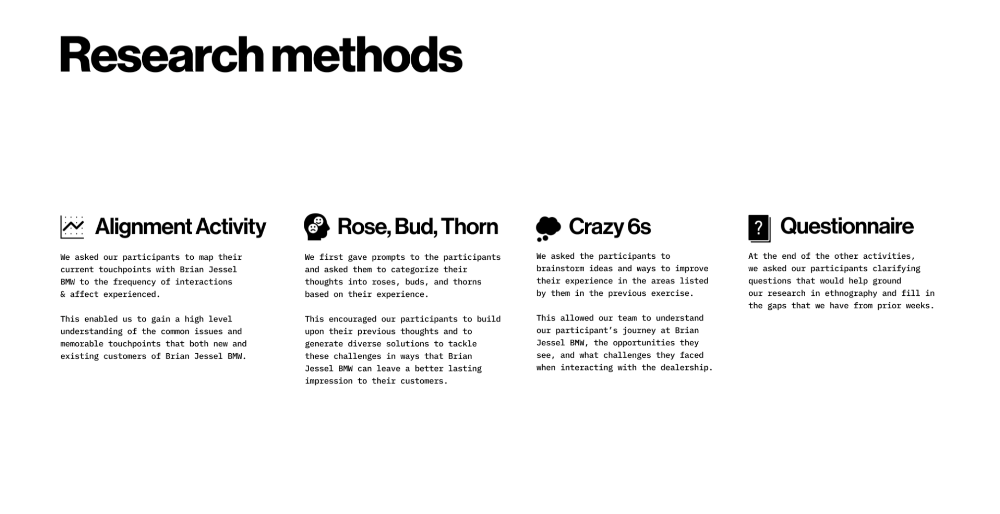
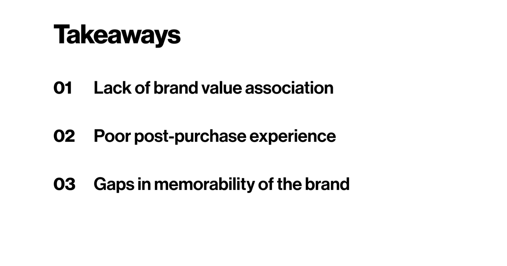
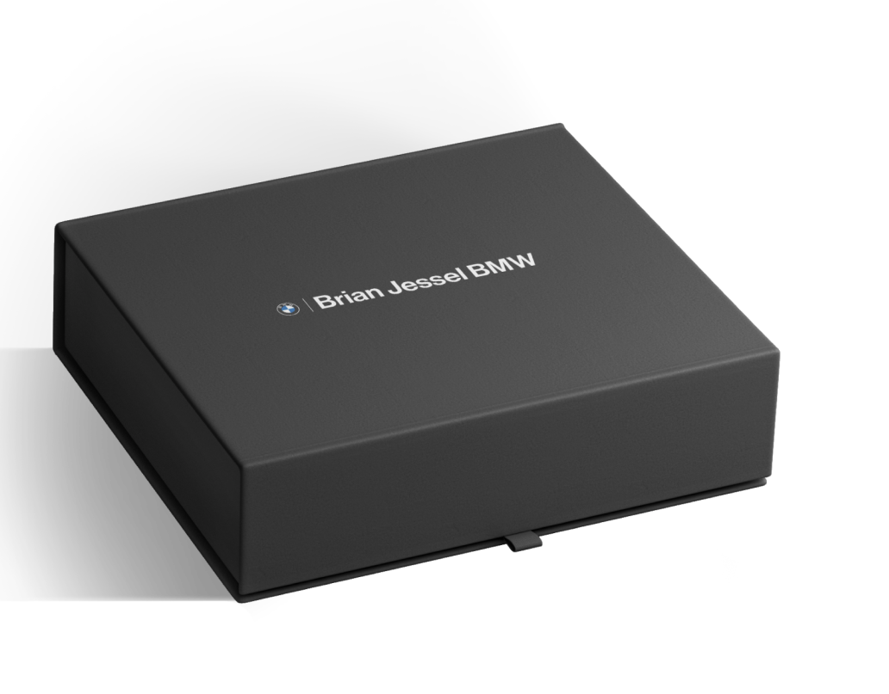
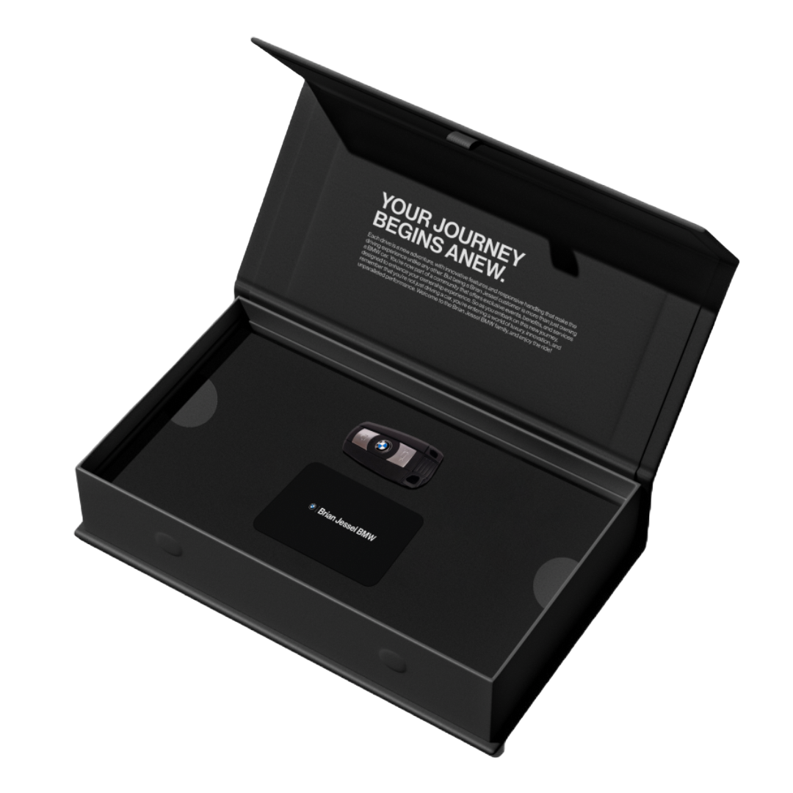
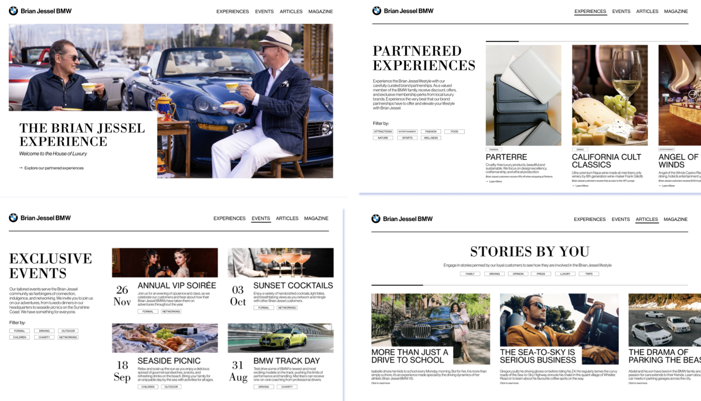
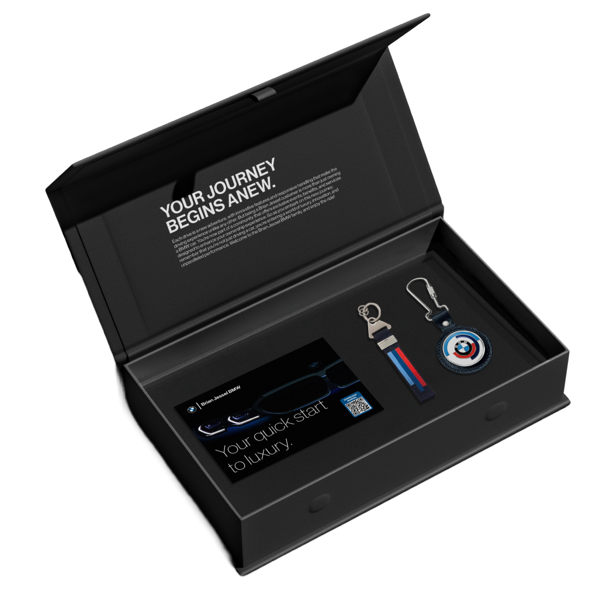
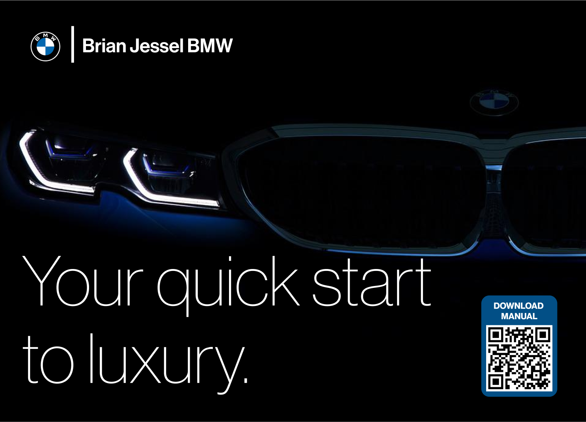
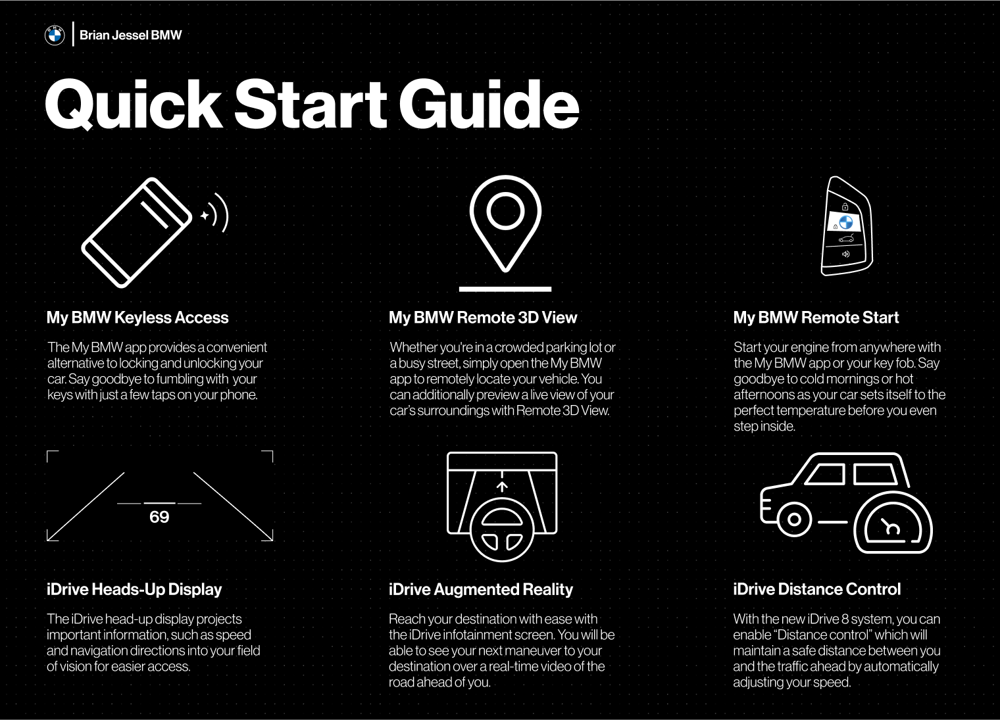

The Brian Jessel BMW Experience - Interaction Design
Overview
Choosing Our Company
When my team, Nishant, Luke, Justin, Alex and I took Interaction design with Professor Ron Wakary in Spring 2023, we were assigned a 13-week project to chose a local company and go through ethnographic research to understand the company and where they are facing a certain issue. With post-covid aftermaths, we wanted to explore industries that are up to present time suffering with customer retention and persistent loyalty. One industry that came out of our exploration were car dealerships.
We contacted many local dealerships, and ended up working with Brian Jessel BMW. Thus, we decided to create the Brian Jessel BMW Experience: a post-purchase gift-box featuring many cool perks for buying customers to entice loyalty, trust, and uniqueness to the Brian Jessel name. I led the research and all aspects of information and idea relay to the company, as well as accessing necessary company information. As a copywriter, I was also responsible for translating our research into accessible insights. Moreover, I helped with designing the final product, mainly the quick start guide card.
Background
The Luxury Car Problem
If you are living in Canada, it may be no shock to you that the cost of living has sky-rocketed in the past couple years, and with inflation on the rise consumers are on the hunt to cut down their expenses. Thus, due to inflation the luxury automotive industry has been losing customers to cheaper cars.
At Brian Jessel BMW, the head of marketing, Abdel Awwad, has continuously informed us that inflation is their biggest enemy, and that they have been struggling with retaining customers and gaining new customers due to the rise of customer attraction to "lesser" luxury cars at a lower price.
Research
Framing
With the struggle of Brian Jessel BMW being extremely wide-scoped and general, we struggled to truly pinpoint what we could do to help defeat their fight against retaining and gaining customers. Our solution was to create a participatory workshop in hopes to understand the following questions:
Upon understanding our goals from the workshop, I began reaching out to new and old customers, from a customer data sheet provided to me by Abdel (head of marketing), explaining who we are and what the goals of the workshop were. The workshop consisted of the following 4 activities:
The workshop led us to these takeaways...
Result
Introducing The Brian Jessel Experience
Given to new customers, the gift box provides new Brian Jessel BMW customers with a memorable touchpoint, leaving a lasting impression to both inspire brand loyalty and ensure that Brian Jessel BMW stays prominent in customer conversations about their cars and ahead of their competitors.
Layer 1
Accompanying their secondary key, customers are provided with a RFID membership card that gives them access to exclusive offers from partnered businesses. This provides customers with a tangible sense of connection to the brand, allowing Brian Jessel BMW to remain relevant in their customer’s daily lives.
Customers can learn more about the unique perks of being part of the Brian Jessel Experience by scanning the QR code on the back.

Scanning the QR code will lead customers to a microsite, which serves as an exclusive destination for new customers to learn about and engage in tailored experiences. This will include information about upcoming events, inspiring stories from other customers, and enticing offers from brands partnered with Brian Jessel BMW. The microsite was motivated by the limited brand awareness that exists among current customers, despite the dealership’s efforts to establish themselves as a distinct brand through their events and magazine.
Layer 2
The second layer of the box features a helpful quick start guide, designed to introduce new customers in navigating any innovative and unfamiliar features of their new BMW. This is especially useful for customers who may feel overwhelmed by information provided by the salesperson and may need a refresher when using the features for the first time by themselves. By providing clear and concise descriptions, the quick start guide reinforces Brian Jessel BMW's reputation as a brand that cares for its customers, ensuring they have a seamless and positive experience with their new car.
  